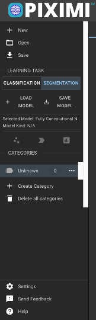
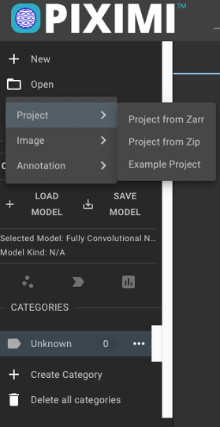
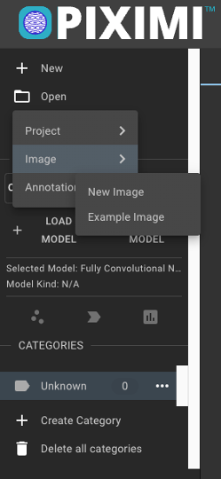

Main menu (left)#
{kind=link}
From this main menu you will be able to create 
New projects, 
Open previous projects or images and 
Save your progress.
You can also access the Classification and Segmentation tools available in Piximi and browse the different Categories you generate during your analysis.
Finally, you can change the UI 
Settings, get 
Help using Piximi’s documentation and Send Feedback to help the Piximi project.

{kind=link}
When you 
Save a Piximi project to your local computer, you get a compressed .zip file that you can share or use later to continue your project from where you left.
You can 
Open a saved project by loading it from the .zip file directly or, alternatively, from the uncompressed project (.zarr file)
You can also choose to 
Open one of the Example Projects to explore and learn about what you can do using Piximi!

{kind=link}
To load images into Piximi, you can simply drag and drop them into the browser o you can load them from the 
Open menu.
There are also some Example Images that you can use to try out Piximi’s tools.